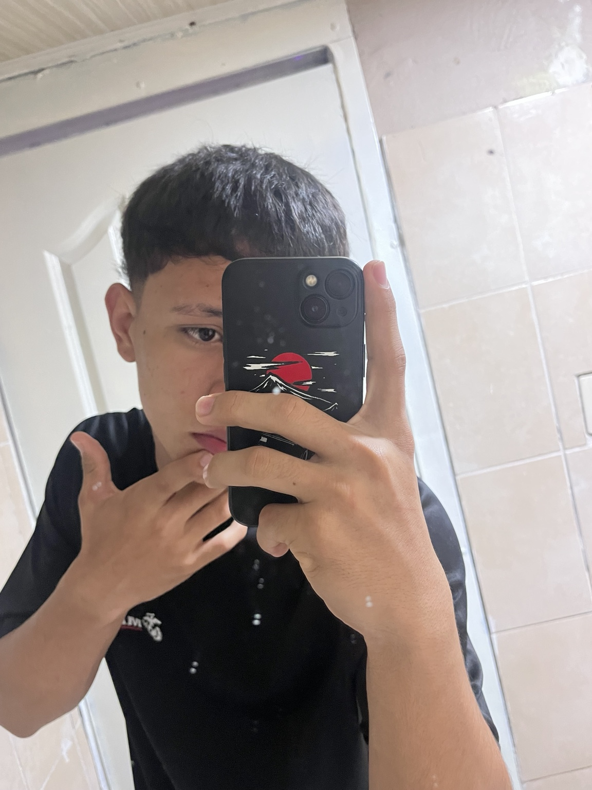

Datos del autor
Autor de la Pagina

Erick Noel Gutierrez Pascual
Más conocido como: Pascualiño
Tema asignado: Inteligencia Artificial
Área: Informática y diseño web
Este proyecto fue creado con varias páginas HTML, una hoja CSS externa, animaciones, imágenes, video, tabla, contenido organizado y un diseño futurista basado en colores relacionados con la tecnología y la Inteligencia Artificial. No le se mucho a esto de la informática